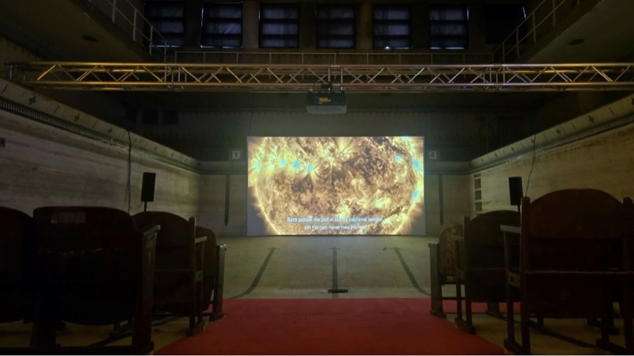
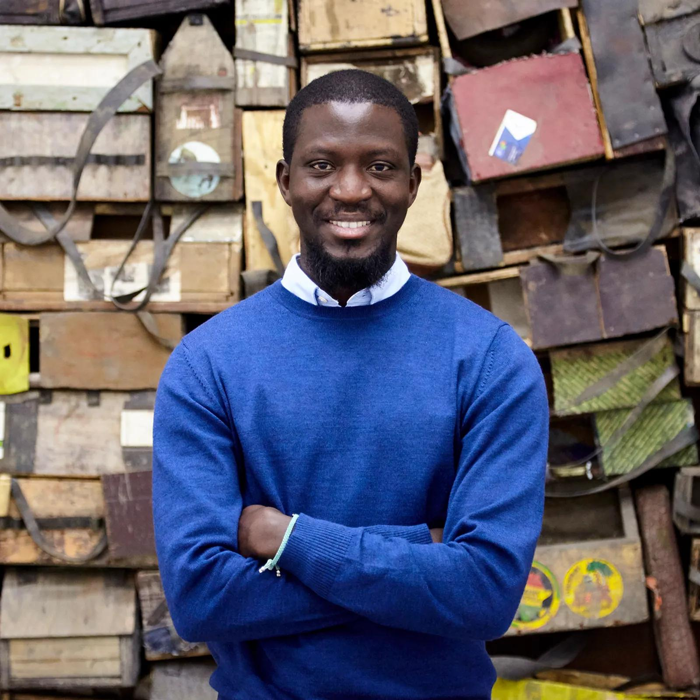
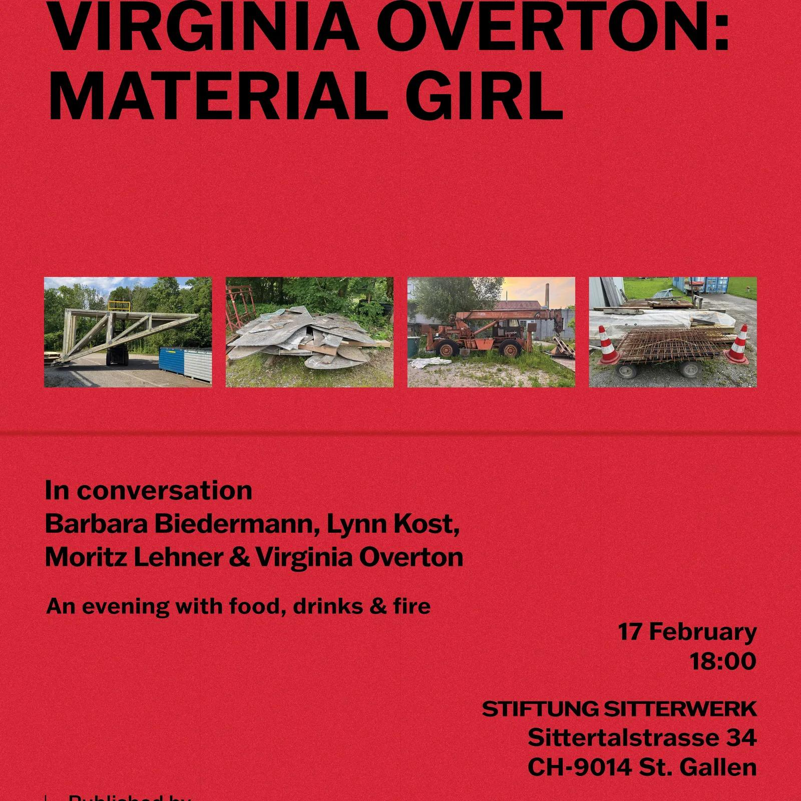
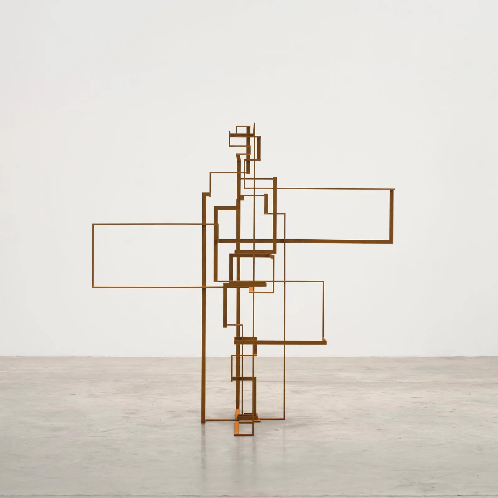
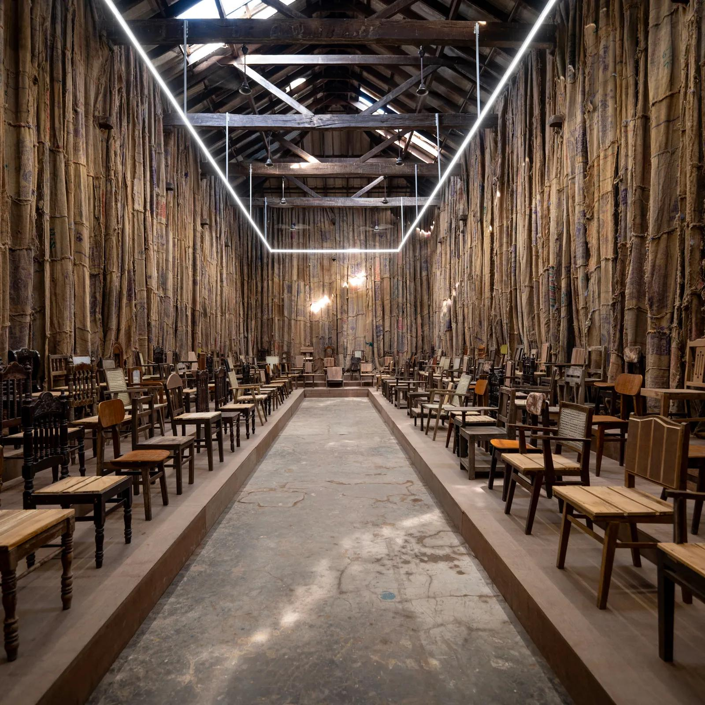

/News

臺灣影像首度參與波蘭羅茲國際攝影節，在歷史泳池與宮殿之間展現多元文化

Art Basel to unveil major commission by Ibrahim Mahama

Book Launch: Virginia Overton ‘Material Girl’ at Stiftung Sitterwerk

White Cube at Frieze Los Angeles 2026
